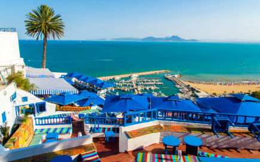
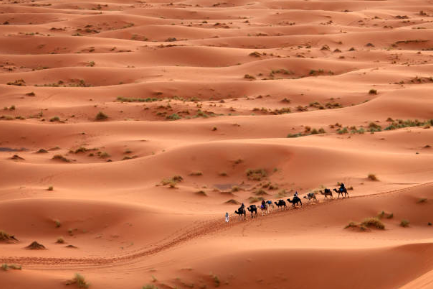
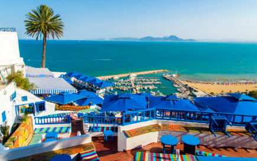
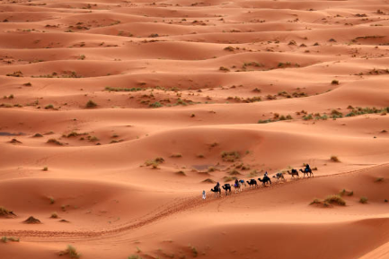
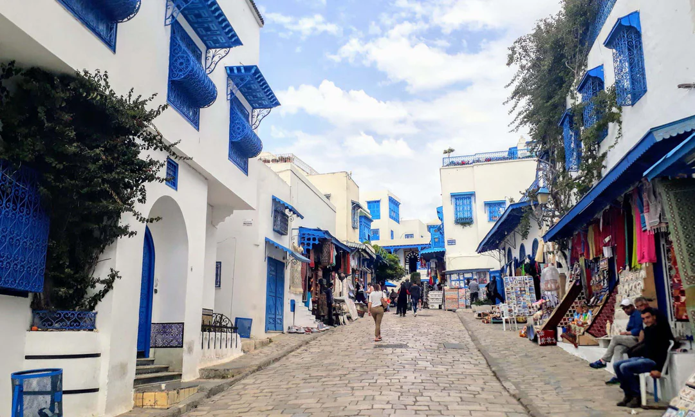
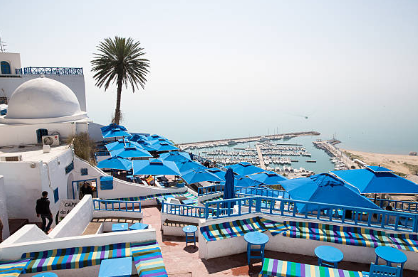
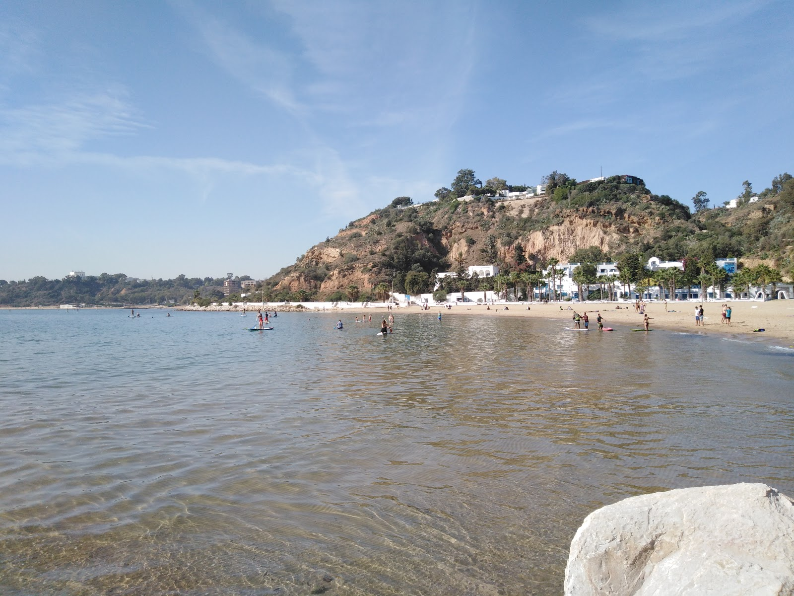
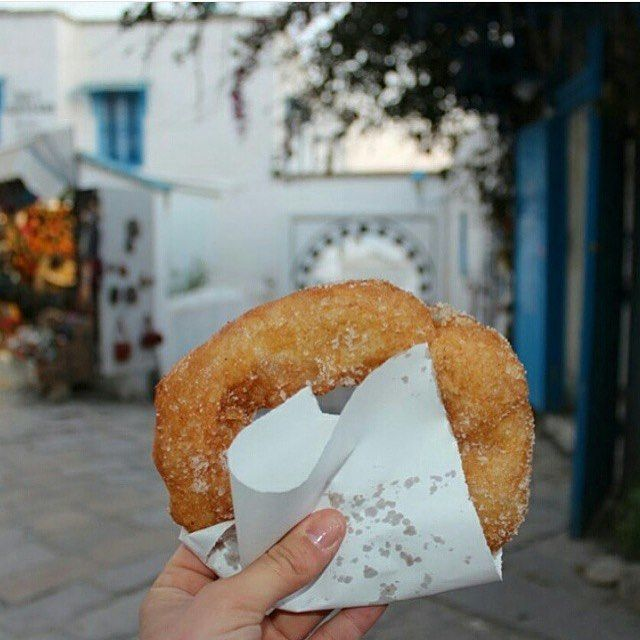

who are we?
 



Discover a treasure trove of travel wisdom on our website, guiding you to the most captivating destinations, delectable cuisines, and unforgettable experiences across Tunis. From hidden gems to iconic landmarks, we curate a rich tapestry of recommendations, ensuring every visitor embarks on a journey brimming with cherished memories. Let us be your compass to the essence of Tunisian exploration, where every corner holds a story waiting to be experienced.
Sidi Bou Said


Sidi Bou Said is a charming village located on the northern coast of Tunisia, just a short distance from the capital city of Tunis. Known for its picturesque white-washed buildings with blue accents, Sidi Bou Said is often considered one of the most beautiful and enchanting destinations in the country.
The village is perched atop a cliff overlooking the Mediterranean Sea, offering breathtaking panoramic views of the azure waters below. Its winding cobblestone streets are lined with vibrant flowers, creating a romantic and idyllic atmosphere that has captivated visitors for centuries.
places to visit
Café des Nattes
This iconic café offers stunning views of the Mediterranean Sea and is a great spot to relax with a cup of mint tea or coffee while soaking in the atmosphere of the village.
Sidi Chabaane Beach
While not technically in Sidi Bou Said itself, this nearby beach offers crystal-clear waters and golden sands, perfect for a relaxing day by the sea.
These are just a few highlights of what Sidi Bou Said has to offer. Whether you're interested in history, art, or simply enjoying the beauty of the Mediterranean coast, there's something for everyone to enjoy in this enchanting village.
foods to try
